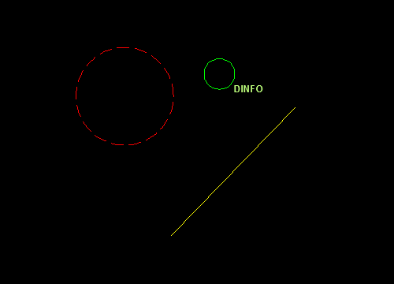
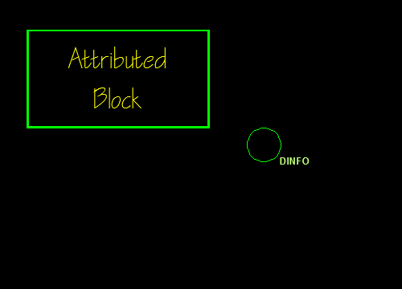

Dynamic Information Tool
This page is delivered for consistency purposes only, as part of the LeeMac sample module of DynALisp, which shows how DynALisp turns existing AutoLISP programs into a module. The program and its description are the work of Lee Mac, who keeps all the credit for them. The original page, with the latest version, is on Lee Mac's website: https://lee-mac.com/dinfo.html
| Function Syntax | LM-DynamicInformation – original syntax: DInfo (see aliases) |
| Current Version | 1.5 |
| Compatible with AutoCAD for Mac? | No |
| Compatible with AutoCAD LT? | Yes |
| Original Page | lee-mac.com/dinfo.html |
Program Description
This program enables a user to quickly obtain important information about any object upon moving the cursor over that object.
There are two modes of use:
- Standard Mode (DInfo)
- Layer Isolation Mode (LayIso)
The mode in which the program is running can be determined by the icon next to cursor, when the cursor is in empty space. This mode can be changed by pressing the Tab key whilst running the program.
Furthermore, the size of the program cursor can be altered by either pressing "+" or "-" whilst running the program.
When the cursor is moved over an object in the drawing, the cursor will recognise the object and turn red. Relevant information about the object will be displayed next to the cursor.
Examples of Usage


Layer Isolation Mode
Upon pressing Tab the user can switch to Layer Isolation Mode, in which LayIso will be displayed next to the cursor.
In this mode, the user has the ability to isolate the layer of the object upon clicking on the object.
All the layers can be turned back on by Shift-Clicking anywhere in the drawing.
Bundled program notes
;;-----------------------=={ Dynamic Information Tool }==----------------------;;
;; ;;
;; Information about an object is displayed upon the user moving the cursor ;;
;; over the object. The cursor size may be altered using the +/- keys, and the ;;
;; program mode may be changed using the TAB key. ;;
;; ;;
;; Click or Hit Enter to Exit the Program ;;
;; +/- Increase or Decrease Cursor Pick Box respectively. ;;
;; ;;
;; Hit 'TAB' to switch modes:- ;;
;; DINFO Mode ~ Information about an object is displayed. ;;
;; LAYISO Mode ~ Isolate a Layer by clicking an object on that layer, ;;
;; Shift-click to turn on all layers. ;;
;; ;;
;;-------------------------------------------------------------------------------;;
;; FUNCTION SYNTAX: DINFO ;;
;;-------------------------------------------------------------------------------;;
;; Author: Lee Mac, Copyright © 2011 - www.lee-mac.com ;;
;;-------------------------------------------------------------------------------;;
;; Version 1.0 - 09-05-2009 ;;
;; ;;
;; First Release ;;
;;-------------------------------------------------------------------------------;;
;; Version 1.1 - 04-04-2010 ;;
;; ;;
;; Complete program upgrade. ;;
;; Removed Object Editing functionality (unnecessary). ;;
;;-------------------------------------------------------------------------------;;
;; Version 1.2 - 06-04-2010 ;;
;; ;;
;; Added additional properties to list. ;;
;; Accounted for Radian measurements. ;;
;; Added 'Belongs to' Field. ;;
;;-------------------------------------------------------------------------------;;
;; Version 1.3 - 07-04-2010 ;;
;; ;;
;; Fixed Dynamic Block SelectionSet error. ;;
;;-------------------------------------------------------------------------------;;
;; Version 1.4 - 07-04-2010 ;;
;; ;;
;; Added Dynamic Block Flag. ;;
;;-------------------------------------------------------------------------------;;
;; Version 1.5 - 06-01-2011 ;;
;; ;;
;; Updated code formatting. ;;
;; Fixed bug pertaining to Polylines within Blocks/XRefs. ;;
;;-------------------------------------------------------------------------------;;
Command Names And Aliases
As in every DynALisp module, each program of this sample module has one main command, named LM-*, and the original command names of Lee Mac's page are kept as its aliases: they run the same command, and can be added, renamed or removed in Dyl-Suite (saved in Resources\Aliases.csv).
| Command | Aliases | Name |
|---|---|---|
| LM-DynamicInformation | DINFO | Dynamic Information |